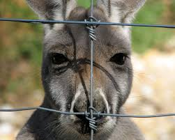
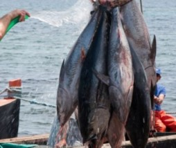
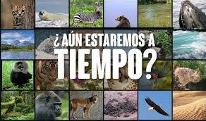

lamentablemente, son muchas las especies que hoy en día se
encuentran en riesgo de extinción. muchas de ellas, debido a la acción del hombre y el cambio climático global, lo que resulta
igualmente un efecto indirecto de las actividades del ser humano. algunas de ellas ya están condenadas a desaparecer de aquí a
unos años y, aunque hay muchas organizaciones que trabajan por preservarlas, día a día siguen sufriendo. en esta lista de ecologíaverde,
te mostramos los 3 animales en mayor peligro de extinción.
el símbolo del continente oceánico, especialmente de australia, cuya carne se
come como algo natural, podría desaparecer en unos años, según expertos. a pesar de su caza, este marsupial sufre sobre todo los efectos
del calentamiento global. si las temperaturas siguiesen aumentando en los últimos años, los canguros podrían estar
condenados a desaparecer

el atún rojo
este pez migratorio que se suele encontrar en el atlántico y el mar mediterráneo
ha dado síntomas de debilidad en los últimos años. ¿el motivo de que esté este animal en peligro de extinción? la utilización del atún rojo
en el sushi de calidad del mercado. en estos momentos, ya existe una prohibición temporal para dejar de consumirlo de manera tan abusiva;
lo contrario, podría desaparecer

el gorila de montaña
el gorila de montaña es otro de los animales en vía de extinción, de hecho esta especie
se encuentra en peligro grave de extinción, respecto a su caza y el deterioro que ha sufrido su hábitat. se calcula que existen menos de 800
individuos de gorila de montaña viviendo en su entorno natural
cómo salvar a animales en peligro de extinción y evitar que desaparezcan es una de las preguntas
más extendidas a raíz de las nuevas noticias de especies en riesgo y de especies que acaban de desaparecer, como el puma norteamericano.
lo cierto es que son muchísimas las cosas que podemos hacer evitar que animales en peligro acaben
desapareciendo. no obstante, hay que tener en cuenta que no todos estos procesos son totalmente nuestra culpa ni todos dependen de nosotros. sí es cierto que
muchas especies están en nuestra situación por nuestras actividades y que en el caso de otras lo que estamos haciendo es participar en la aceleración de su
desaparición.
algunas de las cosas que podemos hacer para proteger a los animales que están en peligro de extinción son las siguientes:
ser ecológicos, evitando consumir ciertos productos y reducir el consumo de otros, reutilizar objetos y reciclar los materiales que se puedan.
evitar usar transportes innecesarios que contaminan usando más el transporte público o transportes limpios, como andar, la bicicleta, los patines, etcétera.
ayudar a las distintas asociaciones, organizaciones y gobiernos a luchar contra el tráfico ilegal de animales y la caza furtiva.
denunciar cualquier caso de tráfico ilegal de animales, o de partes de ellos, y de caza furtiva que veamos o conozcamos.
informarnos para concienciarnos y saber qué podemos hacer a nivel local, por ejemplo consultándolo en el ayuntamiento, y ayudar a concienciar a los niños y jóvenes.

para saver mas de animales en peligro de extincion ve el video